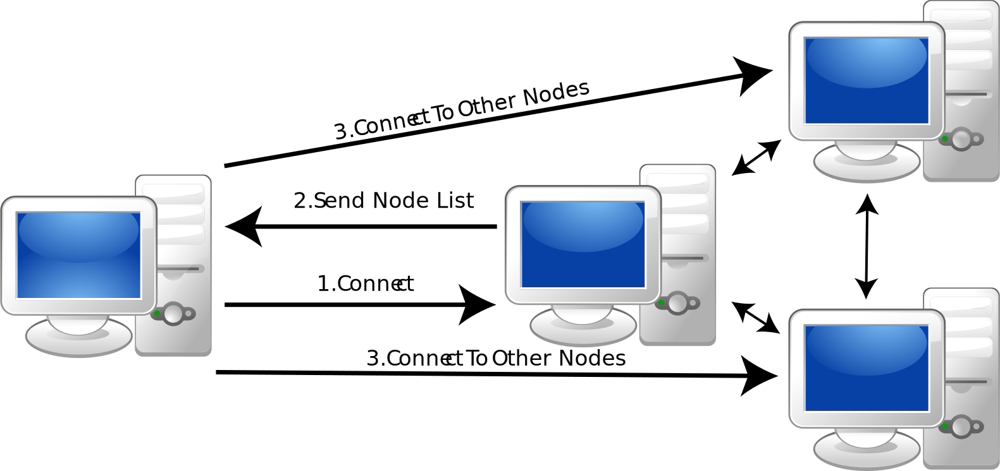
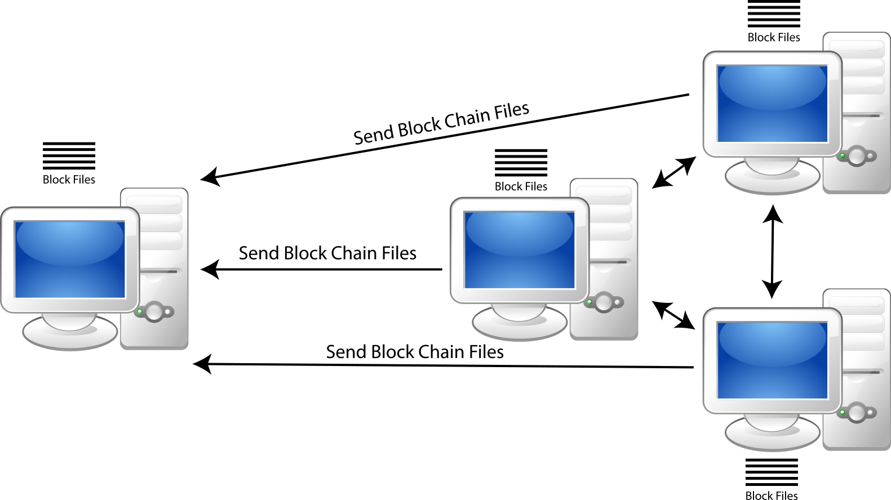

JCrypto
A Staking Decentralized Crypto Currency Network Programmed With Java
Introduction
JCrypto is a crypto currency that uses crypto staking nodes to validate and add records on to the blockchain.
Users that stake 0.1% of all currency in circulation have the ability to validate the blocks and add them to the chain.
Additionally through the use of smart contracts, the blockchain allows open staking pools, once a user sets up a staking pool any individual can contribute and receive rewards.
Through the use of smart contracts users can also mint and transfer unique records on the chain. As seen below.
Repository
Getting Started
Downloading the Wallet Extension
To download and install the wallet extension
- Download the repository at the link git: Click here for git | Click here for zip
- To install follow the instructions at Chrome Extension Installation, using the "Extension" directory as the source.
Running a Full Node
Installing and Running a Node
- Download the repository at the link git: Click here for git | Click here for zip
- Ensure you have java 17 installed if not navigate to this link
- Open your preferred terminal application
- Navigate to the directory where you downloaded the respository
- Run the command: java -jar target/P2PComm-1.0-SNAPSHOT-jar-with-dependencies.jar
- At the terminal window type 0
- Enter the name of the folder to store your chain
- Enter 0 for create wallet
- Enter a wallet name and a password
- Store the mnemonic given offline as this is not accessible again after this point
- If you know a running peer enter 2 to start peer and enter the port number to run your server
- Enter 3 to connect to peer and enter the peer address:port
- If insted you would like to create your own new blockchain type 5
- Type the password to your wallet and the chain will establish itself
- You will automatically be setup as the only validator for the chain
- Press 7 to see the balance in the wallet and it should be 50 usable balance, 10 borrowed and 10 lent
- To validate the chain and create new blocks enter 2 and type in any port number (i.e. 4444, 5555)
- More options will be become available enter 14 to start validating
- If it states a schedule time and time to reset you have started validating the chain
How it Works
P2P Network
JCrypto works by establishing a peer 2 peer network connecting all nodes as seen below.

Once one node connects to another it requests the information about how to connect to other nodes (i.e. address:port)

Once connected these nodes then request the data related to the blockchain so that they can store it locally which facilitates the decentralization.

Each node has the entire chain stored locally and can share the chain with other nodes once connected so if one node loses the chain it can be restored by communicating with other nodes.
The strength of the network relies on the number of active full nodes and the integrity of the validators.
Blockchain Structure
The JCrypto blockchain is built by creating individual records known as blocks which store records of different types currently supported types are Transactions, Borrow Contracts, Lend Contracts, Stake Contracts, NFTs, and NFT Transfers.
These blocks are built on top of each other end to end with the each block containing the hash of the previous block. This is why it is called a chain because the blocks are chained together by the previous blocks hash.
This is what provides integrity to the chain, the block hash is unique to the exact contents of the block, if a block was tampered with the hash would be unequal to the hash identified in the next block and the node's blockchain would be invalid.
Additionally the blocks order is always known all you need is the first hash and you can follow through the entire chain by hashing each block and looking for the block with an equal previous hash.
Block Structure
The Blocks are structured as follows:
The Block Header Contains
- Previous Block Hash: The hash of the previous block contents
- Stake Contract Hash: The hash of the stake contract belonging to the block validator
- Timestamp: The time that the block was sent to the other nodes for validation
The Transaction Section Contains
- Coinbase Transactions: Always the first transaction this is the reward issued to the validator for confirming the block.
- Transactions: All of the additional transactions and contracts.
Transactions
A transaction is formatted as follows:
Each transaction contains inputs and outputs.
The input is derived from a previous output and ownership of that output is confirmed by confirming the user owns the address.
The output is determined by the sender saying how much he would like to send each address and ensuring that he has enouch currency in the inputs section to send that amount.
This works similar to the blockchain structure. Each transaction can be identified by a hash. Each output is identified by its location in the transaction outputs.
For example if my friend sent me 10 coins in transaction hash 12345 and I wanted to send 10 coins the transaction would look like the following.
This transaction would be signed with my private key confirming I agree to the transaction. This key is a ECDSA private key, a public key is derived from it and the public key is then hashed to arrive at the address. This allows anyone to confirm the address by hashing my public key but the private key cannot be reversed from the address.
Ownership of the inputs can be confirmed by using the public key to verify the inputs were properly signed and by obtaining the output corresponding to that input and confirming the hashed public key matches the output address.
This process allows confirmation of ownership since the signature is derived from the private key. The public key validates the signature confirming the user has the mathcing private key, the public key hash matches the address that the previous funds were sent to. Confirming the user has the private key matching the address with unused outputs.
Coinbase Transation
The coinbase transaction is the first transaction in each block. It distributes the reward to the validator and any who staked currency on that contract.The coinbase output is the addresses of all lenders on the stake contract, the amount is the reward (decreasing overtime using a mathematical calculation) plus any fees divided amongst the stakers by percentage of staked funds.
Contracts
Borrow Contract
The first contract is a borrow contract this contract is used to let other's know you are looking to borrow funds.Lend Contract
This contract is used to lend funds to borrowers. The lender prepares a transaction for the amount they wish to lend with the output address equal to borrower's address. This transaction is added to the lend contract and submit to the validators for confirmation.Stake Contract
This contract is used to track staked funds. This contract is linked to a borrow contract, once this contract is added to the chain all funds borrowed under the linked borrow contract are staked, once the user reaches the required amount of staked funds they become a validator.NFTs
NFTs are used to store date on the chain. This date is then given a unique hash that can be used to confirm ownership. Since the record is published when the contract is minted anyone can match the private key to the signature of the minted NFT confirming ownership.
NFT Transfers
NFT transfers are zero value transfers from one address to another. The owner of the NFT enters the address to transfer to and signs the record. The owner is confirmed using their public key to validate the signature and the transfer record is added.
As a result of the chain being publicly available but anonymous, any transfer of an NFT can be followed from mint to transfer confirming the ownership record and the address of the current owner.
Sending Transactions
To send transactions the sender connects their node to the chain. The user determines the amount and address of sending. The wallet builds the transaction by adding the required unused outputs as inputs to the transaction until the value is greater than or equal to the output value. If the value is greater than the output value a final output is added to return the excess amount back to the sender. Once the transaction is built it is signed by the sender using their private key and then sent to the other nodes. The validators will verify the transaction is okay and send a response confirming acceptance of the transaction.
Block Confirmation Process
Block Proposal
Blocks are confirmed via a proposal and voting system where one node proposes a block and the other nodes validate it's accuracy and vote on whether it should be added.This process is started by each validator preparing a list to determine which stake contracts have the required amount of currency by looking for lent funds attached to the stake contract.
From this list a schedule is prepared allowing the nodes to take turns validating the blocks.
The schedule is prepared by ordering the list of validators by total amount staked.
Once the list is ordered the total number of blocks is obtained. Total Blocks mod Total Validators is used to determine who will propose a block first (i.e. Total Blocks = 7, Total Validators = 3, 7 mod 3 = 1, the validator with the second highest stake total goes first).
The chain intends on blocks being added every 3 minutes. The schedule of propositions will start 3 minutes after the previous blocks timestamp. Then each node has 3 minutes to propose a block.
Continuing the example above if the previous block was added at 12:00pm the schedule is as follows.
- Node 1: 12:03pm - 12:06pm
- Node 2: 12:06pm - 12:09pm
- Node 0: 12:09pm - 12:12pm
- Node 1: 12:12pm - 12:15pm
- ...
Once a node's scheduled time arrives, the block is sent over the network for the other nodes to confirm.
Block Validation and Voting
Once a node receives the block is starts the validation process. It checks to ensure the block is being mined within the schedule and it's timestamp is accurate.It then confirms whether the block's previous hash matches the hash of the last added block.
Then it verifies the user is a validator by checking whether the stake contract hash provided in the block has the required amount of funds.
The block then proceeds to validate transactions. This is done a different way for each type of transaction.
- For coinbase transactions it confirms the reward matches the correct block reward (decreasing as time goes on) plus fees from transactions.
- For regular currency transactions it confirms ownership of funds and whether there is enough funds to send the transaction.
- For contracts it confirms the contents are accurate and the signature matches the key.
- For NFT minting it confirms the contents are unique, and the signature is accurate.
- For NFT Transfers it confirms ownership of the NFT.
Once >50% of all validators have voted to accept a block the nodes add the block to the chain and proceed to establish the next schedule.